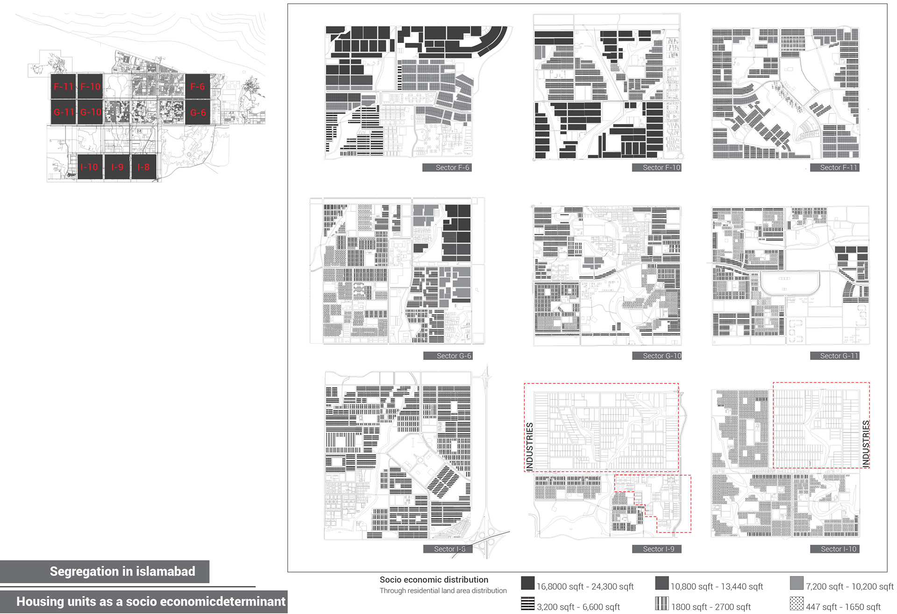
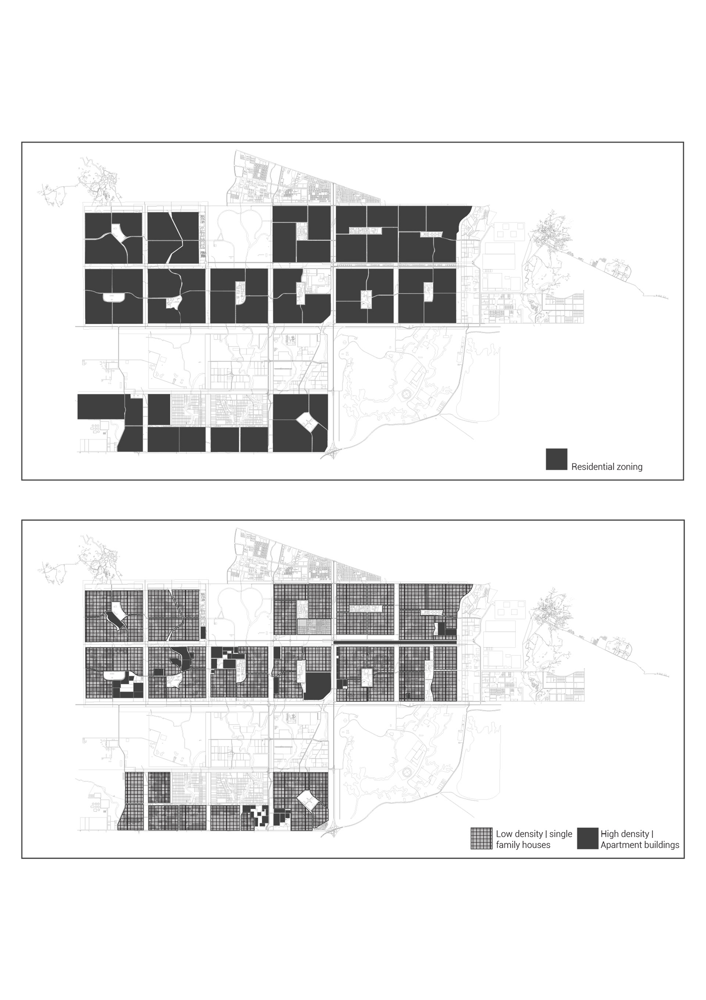
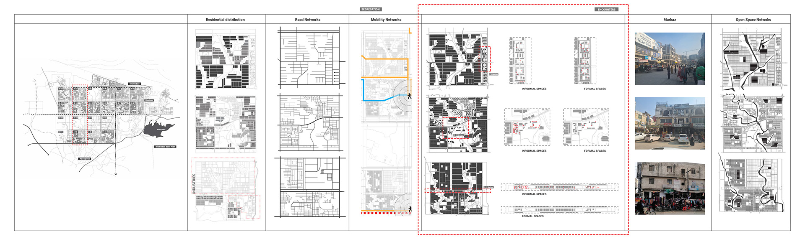
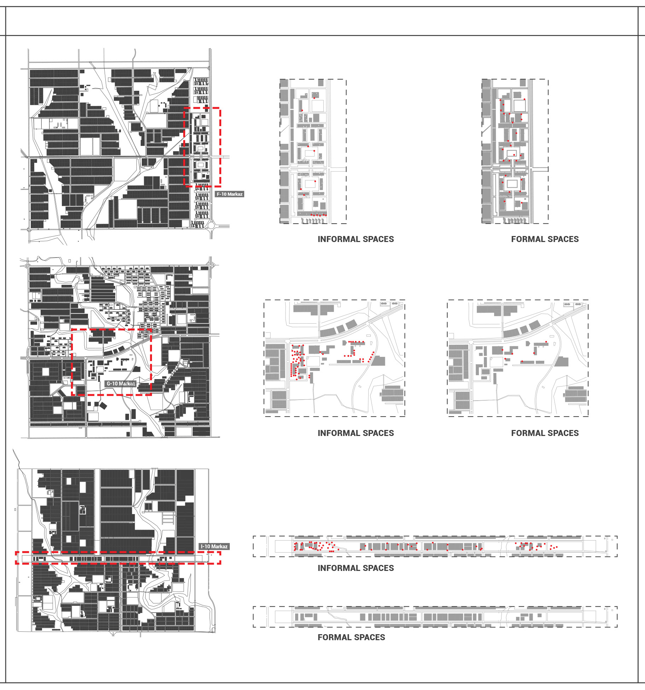
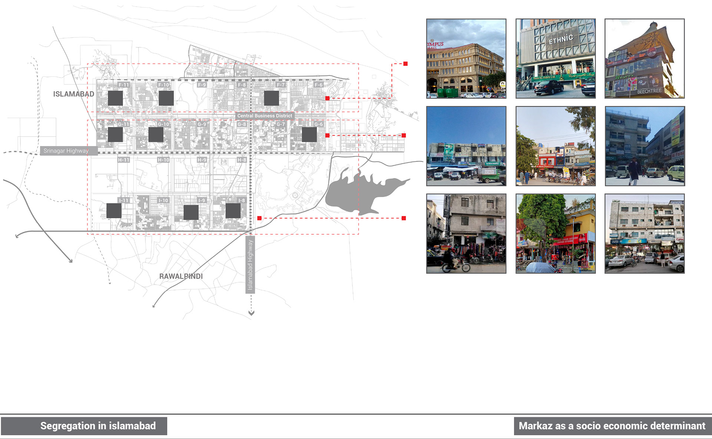
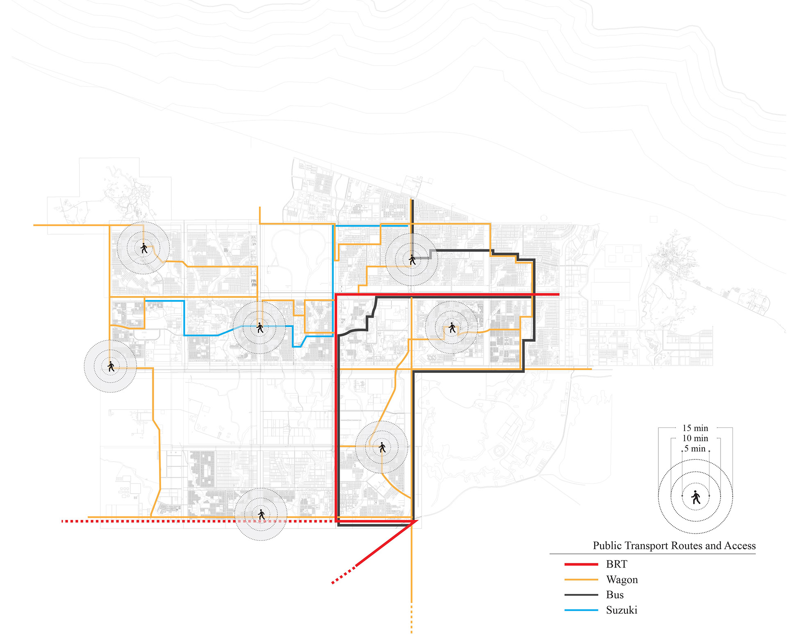

Islamabad as a socio-economic class study
This research explored the socioeconomic disparities shaping the urban language of Islamabad, a city distinctly divided into socioeconomic zones. Through mapping techniques, I analyzed how these divisions manifest in the city's layout and visual identity, revealing stark contrasts in infrastructure, land use, and accessibility.
By visually documenting the layers of disparity—both structural and spatial—this study highlights how socioeconomic dynamics influence the city’s development and urban experience. It’s a lens into how cities like Islamabad can reflect, and potentially reinforce, the divides within society.

Socioeconomic patterns via residential land distribution

Zoning contrast: Low-density vs. high-density housing

Land distribution and encounter dynamics across three sectors

Formal versus informal urban configurations

Evolution of Markaz functions across successive sectors

Public transportation route mapping